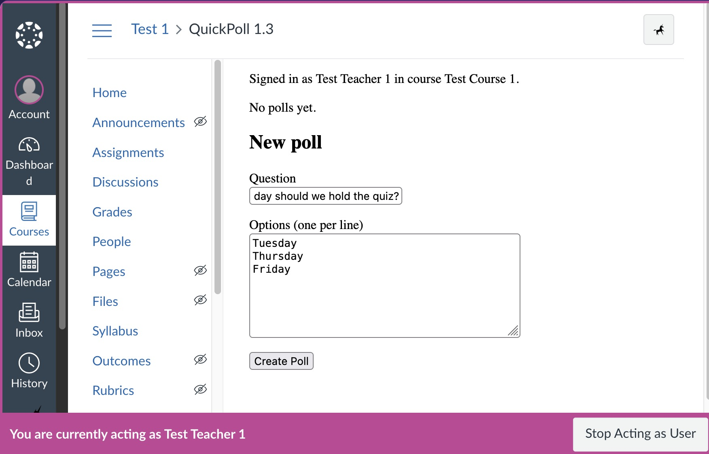
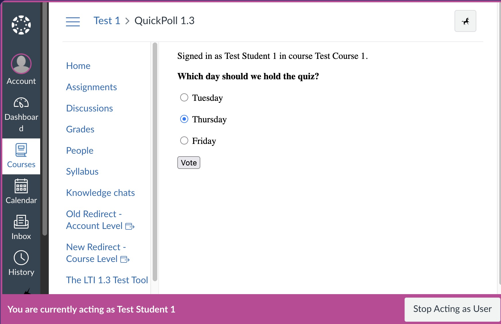
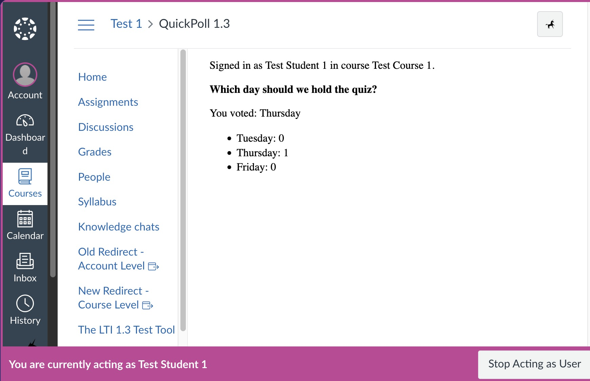

What I learned in hackweek about how LTI 1.1 and LTI 1.3 really differ.
Scroll down
I built one LTI tool twice.
Teachers write a poll. Students vote once. Both versions run side by side in my local Canvas.



Screens from the 1.3 version, in a local Canvas with test users.
QuickPoll: a teacher posts a poll in Canvas, and students vote once and see the results.
A launch is what happens when you click the tool in Canvas. 1.1 proves identity with a shared secret. 1.3 proves it with a signed token.
The big difference is the launch. 1.1 sends one form, signed with a shared secret. 1.3 sends a signed token, checked with Canvas's public key.
Same app, same polls. The trust model moved, and everything around it moved too.
Trust moves to a public key. Install moves to a JSON config.
One click in my local Canvas, four steps. Canvas signs a form, the browser carries it, and the tool checks it. The tool never calls Canvas.
Click the diagram to replay the steps.
In 1.1, Canvas signs one form with the shared secret. The browser posts it, and my tool re-checks the signature.
One click in my local Canvas, nine steps. Solid arrows are requests, dashed arrows are answers. Step 8 is the only request the browser never sees.
Click the diagram to replay the steps.
Here's one real 1.3 launch. Canvas starts the login. My tool saves a nonce and sends the browser back. Canvas signs a token and posts it. My tool downloads Canvas's public keys and checks it.
Same poll tool - Two LTI versions - One local Canvas.